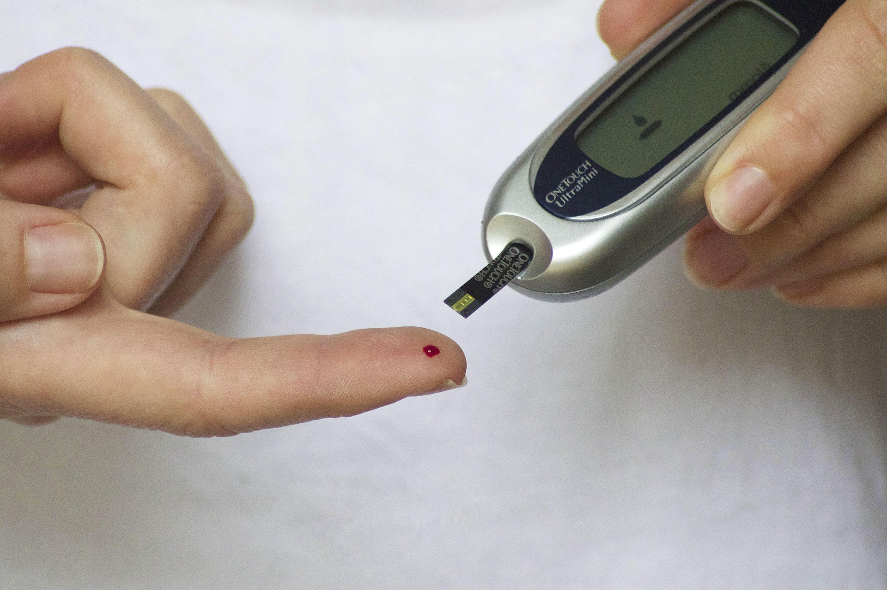
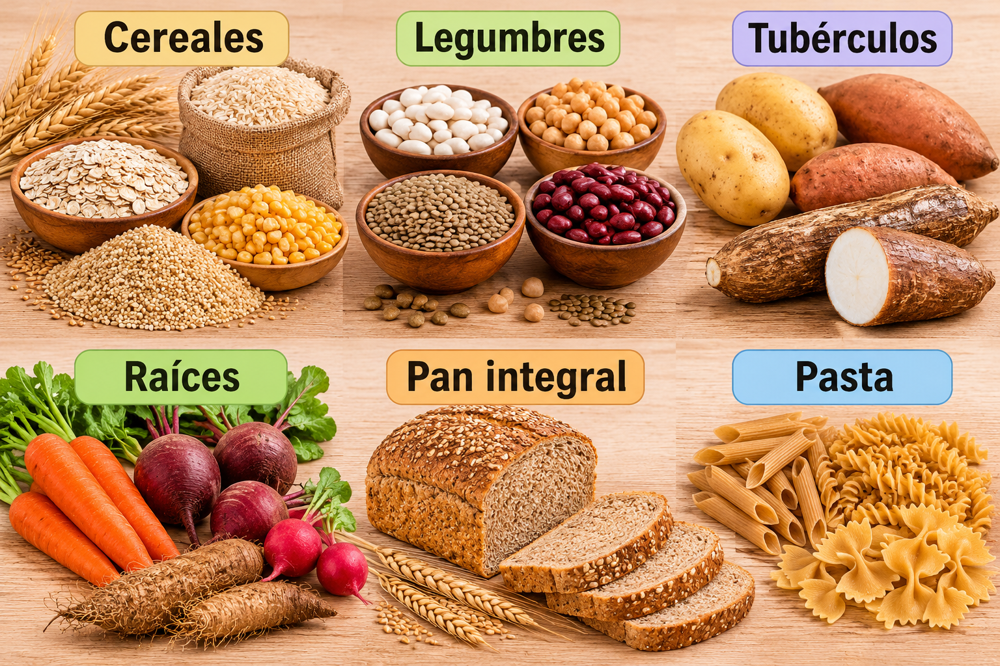
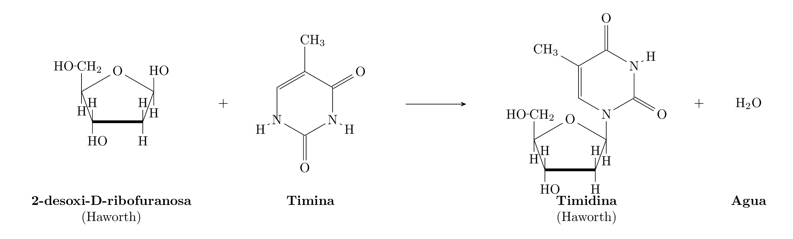

Azúcares (Carbohidratos o Glúcidos)
Clasificación estructural, estereoquímica (Fischer, Haworth y silla), propiedades químicas, disacáridos y polisacáridos.
Química Orgánica
Dr. Ronald F. Rodriguez Espinoza
Reflexión desde la experiencia · Control glucémico
Preguntas de análisis

[Imagen: medidor de glucosa]
- ¿Cómo se llama el sistema de la imagen? ¿Para qué sirve?
- ¿Qué es la glucosa? ¿Por qué es importante?
- ¿Cómo se llama la familia de compuestos a los que pertenece la glucosa?
Análisis bioquímico y clínico
Ocultar / Mostrar respuestas
Respuestas
- Glucómetro digital: Dispositivo portátil que emplea tiras reactivas con enzimas (como la glucosa oxidasa) para cuantificar la concentración de glucosa en sangre capilar (glucemia), vital en el diagnóstico y control de la diabetes mellitus.
- Glucosa (C₆H₁₂O₆): Es una aldohexosa (monosacárido de 6 carbonos con grupo aldehído). Constituye el principal combustible metabólico de las células humanas (especialmente neuronas, retina y glóbulos rojos) al oxidarse en la glucólisis y respiración celular para sintetizar ATP.
- Familia química: Pertenece a los carbohidratos, glúcidos o hidratos de carbono (específicamente al grupo de los monosacáridos).
Reflexión desde la experiencia · Digestibilidad de glúcidos
Observe las imágenes y analice

[Cereales, legumbres, tubérculos, raíces, pan integral, pasta]
- ¿Podemos comer la totalidad de los alimentos mostrados? Es decir, ¿podemos comer y metabolizar las partes duras de los alimentos: corontas, hojas de maíz, cáscaras de habas?
- ¿Existen animales que pueden comer y metabolizar la totalidad de estos alimentos? ¿Cómo pueden hacer esto? ¿Tiene que ver con la estructura de los componentes internos de estos alimentos?
Explicación estructural y metabólica
Ocultar / Mostrar respuestas
Respuestas
- En el ser humano: Podemos ingerirlas como fibra dietética insoluble (que favorece el tránsito intestinal), pero no podemos digerirlas ni metabolizarlas para obtener energía. Estas estructuras rígidas están hechas de celulosa y lignina, y nuestro sistema digestivo carece de la enzima celulasa.
- En animales herbívoros y rumiantes: Vacas, ovejas, caballos, conejos y termitas sí pueden aprovecharlas. No producen celulasas propias, sino que mantienen una simbiosis con microorganismos (bacterias, protozoos y hongos anaerobios) en su rumen o ciego que hidrolizan la celulosa en ácidos grasos volátiles absorbibles.
- Relación con la estructura química: El almidón del grano (digerible) tiene enlaces glucosídicos α(1→4) que forman hélices accesibles a nuestras amilasas; en cambio, la celulosa posee enlaces β(1→4) que generan cadenas rectas fuertemente unidas por puentes de hidrógeno, impenetrables para nuestras enzimas.
Tema 1 · Generalidades y clasificación
Definición de carbohidratos, glúcidos o azúcares: Son biomoléculas orgánicas compuestas por carbono, hidrógeno y oxígeno, definidas químicamente como polihidroxialdehídos (aldosas), polihidroxicetonas (cetosas), o sustancias que por hidrólisis generan estos compuestos. Responden históricamente a la fórmula empírica general Cₙ(H₂O)ₙ, aunque muchos derivados contienen además nitrógeno, fósforo o azufre.
Monosacáridos (Osas)
Son las unidades monoméricas más simples (de 3 a 7 átomos de carbono) y no pueden hidrolizarse en glúcidos más pequeños. Son sólidos cristalinos, blancos, solubles en agua e insolubles en disolventes apolares.
- Según grupo carbonilo: Aldosas (grupo aldehído en C-1) y Cetosas (grupo cetona, usualmente en C-2).
- Según longitud de cadena: Triosas (3C), Tetrosas (4C), Pentosas (5C: ribosa, xilosa), Hexosas (6C: glucosa, galactosa, fructosa).
Oligosacáridos (2 a 10 unidades)
Polímeros cortos formados por la condensación de 2 a 10 monosacáridos unidos mediante enlaces O-glucosídicos con eliminación de una molécula de agua por cada enlace.
- Disacáridos (los más abundantes): Sacarosa, lactosa, maltosa y celobiosa.
- Función biológica: Fuente energética rápida (disacáridos) y marcadores de identidad y reconocimiento celular cuando se unen a proteínas o lípidos de membrana (glucocálix).
Polisacáridos (> 10 a miles de unidades)
Macromoléculas de elevado peso molecular, generalmente amorfas, no dulces e insolubles o coloidales en agua.
- Homopolisacáridos: Formados por un único tipo de monosacárido. Pueden ser de reserva energética (almidón en plantas, glucógeno en animales) o estructurales (celulosa, quitina).
- Heteropolisacáridos: Constituidos por dos o más tipos diferentes de monómeros (pectinas, ácido hialurónico, heparina, agar).
Tema 2 · Proyecciones de Fischer y estereoquímica
Proyección de Fischer
Representación bidimensional estándar para moléculas quirales de cadena abierta:
- La cadena carbonada se dispone verticalmente con el carbono más oxidado (C-1 en aldosas) en la parte superior.
- Las líneas horizontales representan enlaces que apuntan hacia el observador (cuñas).
- Las líneas verticales representan enlaces que se alejan del observador (líneas punteadas).
Configuración relativa D y L
Se determina observando la orientación del grupo –OH del centro quiral más alejado del grupo carbonilo (penúltimo carbono):
- Serie D: El –OH apunta hacia la derecha (predomina en los azúcares naturales).
- Serie L: El –OH apunta hacia la izquierda.
- Un par D y L del mismo nombre (ej. D-glucosa y L-glucosa) son enantiómeros (imágenes especulares no superponibles).
Epímeros
Son pares de estereoisómeros (diastereómeros) que tienen exactamente la misma configuración en todos sus centros quirales excepto en uno solo.
- D-manosa es el epímero en C-2 de la D-glucosa.
- D-galactosa es el epímero en C-4 de la D-glucosa.
Ejercicio 1 · Proyección simplificada de Fischer
Pregunta / Enunciado: Dibuje la proyección simplificada de Fischer para los monosacáridos indicados: D-xilosa y D-manosa.
Esquema / Figura de trabajo
Solución
Ver respuesta detallada
Respuesta
- D-xilosa (Aldopentosa, 5 carbonos):
- C-1: –CHO (grupo aldehído superior).
- C-2: –OH a la derecha.
- C-3: –OH a la izquierda.
- C-4: –OH a la derecha (define la serie D).
- C-5: –CH₂OH (alcohol primario inferior).
- D-manosa (Aldohexosa, 6 carbonos; epímero C-2 de D-glucosa):
- C-1: –CHO.
- C-2: –OH a la izquierda.
- C-3: –OH a la izquierda.
- C-4: –OH a la derecha.
- C-5: –OH a la derecha (define la serie D).
- C-6: –CH₂OH.
Ejercicio 2 · Epímeros en aldotetrosas
Pregunta / Enunciado: Dibuje la proyección de Fischer del glúcido “X”, que es epímero C-3 del compuesto A. Asimismo, el compuesto A es epímero C-2 del compuesto: (2S, 3R)-2,3,4-trihidroxibutanal.
Esquema / Figura de trabajo
Análisis estereoquímico paso a paso
Ver resolución completa
Respuesta
- Identificación del compuesto de partida: El (2S, 3R)-2,3,4-trihidroxibutanal tiene 4 carbonos:
- C-2 (S): Prioridades: 1(–OH), 2(–CHO), 3(–CH(OH)CH₂OH), 4(–H). Para ser S en Fischer con –H horizontal, el –OH va a la izquierda.
- C-3 (R): Prioridades: 1(–OH), 2(–CH(OH)CHO), 3(–CH₂OH), 4(–H). Para ser R con –H horizontal, el –OH va a la derecha.
- Este compuesto corresponde a la D-treosa.
- Determinación del compuesto A (epímero C-2): Invertimos únicamente la configuración del C-2 → C-2 (–OH derecha) y C-3 (–OH derecha). Corresponde a la D-eritrosa.
- Determinación del glúcido “X” (epímero C-3 de A): Invertimos únicamente el C-3 de A → C-2 (–OH derecha) y C-3 (–OH izquierda). El glúcido “X” es la L-treosa.
Ejercicio 3 · Epímeros en aldopentosas
Pregunta / Enunciado: Dibuje la proyección de Fischer del glúcido “X”, que es epímero C-4 del compuesto B. Asimismo, el compuesto B es epímero C-3 del compuesto: (2S, 3S, 4R)-2,3,4,5-tetrahidroxipentanal.
Esquema / Figura de trabajo
Análisis estereoquímico paso a paso
Ver resolución completa
Respuesta
- Compuesto de partida (2S, 3S, 4R)-2,3,4,5-tetrahidroxipentanal:
- C-2 (S): –OH a la izquierda.
- C-3 (S): –OH a la izquierda.
- C-4 (R): –OH a la derecha.
- Este monosacárido es la D-lixosa.
- Compuesto B (epímero C-3): Invertimos C-3 → C-2 (–OH izq), C-3 (–OH der), C-4 (–OH der). Corresponde a la D-arabinosa.
- Glúcido “X” (epímero C-4 de B): Invertimos C-4 → C-2 (–OH izq), C-3 (–OH der), C-4 (–OH izq). El glúcido “X” es la L-xilosa.
Reactividad del grupo carbonilo: Tautomería y Acetales
Tautomería cetoenólica
Isomería constitucional dinámica entre un compuesto carbonílico (forma ceto, termodinámicamente más estable) y un alcohol vinílico (forma enol), producida por la migración de un protón del carbono α hacia el oxígeno carbonílico.
R–CH₂–CH=O ⇌ R–CH=CH–OH
Síntesis de hidratos (gem-dioles)
Adición nucleofílica reversible de una molécula de agua al enlace polar C=O (catalizada por ácidos o bases), generando un diol geminal en equilibrio:
R–CHO + H₂O ⇌ R–CH(OH)₂
Síntesis de hemiacetales, acetales y cetales
- Hemiacetal / Hemicetal: Adición de 1 mol de alcohol (R'–OH) a un aldehído o cetona. El carbono carbonílico queda unido simultáneamente a un grupo –OH y a un grupo –OR'. (Mecanismo de ciclación de monosacáridos).
- Acetal / Cetal: Reacción del hemiacetal/hemicetal con un 2.º mol de alcohol en medio ácido (con pérdida de H₂O). El carbono queda unido a dos grupos –OR'. (Mecanismo de formación de glicósidos y disacáridos).
Ejercicio 4 · Formación de acetales
Pregunta / Enunciado: Dibuje y nombre el producto que se obtiene de la reacción entre butiraldehído y 2 mol de propan-2-ol (en presencia de catalizador ácido).
Esquema / Figura de trabajo
Mecanismo y producto
Ver reacción y nomenclatura
Respuesta
Ecuación química:
CH₃CH₂CH₂CHO + 2 (CH₃)₂CHOH ⇌ CH₃CH₂CH₂CH[OCH(CH₃)₂]₂ + H₂O
- Etapa 1 (Hemiacetal): El primer mol de propan-2-ol ataca al C-1 del butiraldehído formando 1-isopropoxibutan-1-ol.
- Etapa 2 (Acetal): Protonación del –OH, salida de H₂O y ataque del segundo mol de propan-2-ol.
- Nombre IUPAC del producto: 1,1-diisopropoxibutano (también llamado acetal diisopropílico del butanal).
Ciclación de monosacáridos: Fischer, Haworth y Silla
Representación cíclica de Fischer
Los monosacáridos de 5 y 6 carbonos existen mayoritariamente como hemiacetales cíclicos por ataque nucleofílico del –OH de C-4 o C-5 sobre el carbono carbonílico (C-1 en aldosas). Este carbono se convierte en un nuevo centro quiral llamado carbono anomérico, originando dos diastereómeros: anómeros α y β.
Proyección de Haworth (5 y 6 átomos)
- Anillo de 5 átomos (Furanosa): Anillo pentagonal con un oxígeno (ej. D-ribofuranosa, D-fructofuranosa).
- Anillo de 6 átomos (Piranosa): Anillo hexagonal con un oxígeno (ej. D-glucopiranosa).
- Regla de conversión (Serie D): Grupos a la derecha en Fischer van abajo en Haworth; grupos a la izquierda van arriba. El –CH₂OH terminal va arriba. Anómero α: –OH anomérico hacia abajo (trans al CH₂OH); β: hacia arriba (cis al CH₂OH).
Conformación de silla (Piranosas)
Los anillos de 6 miembros no son planos, sino que adoptan la conformación de silla para eliminar la tensión angular y torsional. En la β-D-glucopiranosa, todos los sustituyentes voluminosos (–OH y –CH₂OH) ocupan posiciones ecuatoriales, haciéndola la aldohexosa más estable de la naturaleza.
Ejercicio 5 · Proyecciones de Haworth
Pregunta / Enunciado: Dibuja la proyección de Haworth para los monosacáridos indicados: D-arabinosa y D-idosa.
Esquema / Figura de trabajo
Orientación de los sustituyentes
Ver estructuras de Haworth
Respuesta
- D-arabinosa (Aldopentosa: C2 izq, C3 der, C4 der):
- Como D-arabinofuranosa (anillo de 5): Oxígeno arriba; C-1 (α: –OH abajo / β: –OH arriba); C-2 (–OH arriba); C-3 (–OH abajo); C-4 (–CH₂OH arriba).
- Como D-arabinopiranosa (anillo de 6): C-1 (α: abajo / β: arriba); C-2 (–OH arriba); C-3 (–OH abajo); C-4 (–OH abajo); C-5 (–CH₂OH sin sustituyente extra, dos H).
- D-idosa (Aldohexosa: C2 izq, C3 der, C4 izq, C5 der):
- Como D-idopiranosa (anillo de 6): Oxígeno arriba-derecha; C-1 (α: –OH abajo / β: –OH arriba); C-2 (–OH arriba); C-3 (–OH abajo); C-4 (–OH arriba); C-5 (–CH₂OH arriba).
Ejercicio 6 · De nombre sistemático a Fischer y Haworth
Pregunta / Enunciado: Represente la proyección simplificada de Fischer y la proyección de Haworth del glúcido que es epímero en C-2 de la (2S,3R,4S)-2,3,4,5-tetrahidroxipentanal.
Esquema / Figura de trabajo
Resolución paso a paso
Ver desarrollo completo
Respuesta
- Estructura inicial (2S,3R,4S)-2,3,4,5-tetrahidroxipentanal:
- C-2 (S) → –OH a la izquierda.
- C-3 (R) → –OH a la derecha.
- C-4 (S) → –OH a la izquierda (serie L).
- Corresponde a la L-arabinosa.
- Proyección de Fischer del glúcido buscado (epímero en C-2):
- Invertimos el C-2 → C-2 (–OH derecha), C-3 (–OH derecha), C-4 (–OH izquierda). Este glúcido es la L-ribosa.
- Proyección de Haworth (L-ribofuranosa / L-ribopiranosa):
- L-ribofuranosa (5 miembros): Al ser serie L, el grupo –CH₂OH en C-4 apunta hacia abajo; C-2 (–OH abajo), C-3 (–OH abajo), C-1 (α: –OH arriba / β: –OH abajo).
Tema 3 · Mutarrotación y transposición enodiólica
Mutarrotación
Es el cambio espontáneo y gradual en el ángulo de rotación óptica específica ([α]) que experimenta una disolución acuosa de un anómero puro (α o β) hasta alcanzar un valor constante de equilibrio.
Ocurre porque en agua el anillo hemiacetálico se abre brevemente a la forma aldehídica libre y vuelve a cerrarse en ambas configuraciones anoméricas:
α-D-glucopiranosa (36%, +112°) ⇌ Cadena abierta (<0.1%) ⇌ β-D-glucopiranosa (64%, +18.7°)
Equilibrio final: +52.7°
Transposición enodiólica (Lobry de Bruyn–Alberda van Ekenstein)
En disolución acuosa ligeramente básica, los monosacáridos experimentan tautomerización cetoenólica reversible a través de un intermediario plano llamado enodiol (un doble enlace C=C con dos grupos –OH en carbonos adyacentes).
- Permite la interconversión entre aldosas epiméricas y su cetosa correspondiente: D-glucosa ⇌ enodiol ⇌ D-manosa ⇌ D-fructosa.
- Explica por qué las cetosas (como la fructosa) dan resultado positivo en las pruebas de azúcares reductores (Fehling y Tollens), ya que en medio básico se isomerizan parcialmente a aldosas.
Propiedades redox: Oxidación y Reducción
Pruebas de reconocimiento (Azúcares reductores)
Todo glúcido con un grupo hemiacetal libre (carbono anomérico libre) está en equilibrio con su forma abierta y reduce iones metálicos en medio alcalino:
- 1.1. Reactivo de Fehling: Solución alcalina de Cu²⁺ acomplejado con tartrato (azul intenso). Al calentar con un azúcar reductor, el Cu²⁺ se reduce a Cu₂O (precipitado rojo ladrillo).
- 1.2. Reactivo de Tollens: Solución amoniacal de nitrato de plata, [Ag(NH₃)₂]⁺. El azúcar reduce el Ag⁺ a plata metálica (Ag⁰), formando un característico espejo de plata en las paredes del tubo.
Tipos de oxidación química y biológica
- A) Oxidación con agentes débiles (Br₂ / H₂O, pH 6): Oxida selectivamente solo el grupo aldehído (C-1) a ácido carboxílico, generando un ácido aldónico (ej. D-glucosa → ácido D-glucónico). No oxida cetosas.
- B) Oxidación con agentes fuertes (HNO₃ diluido, calor): Oxida tanto el grupo aldehído (C-1) como el alcohol primario terminal (C-6) a grupos carboxilo, formando un diácido llamado ácido aldárico (ej. D-glucosa → ácido D-glucárico).
- C) Oxidación enzimática (biológica): Enzimas específicas oxidan únicamente el alcohol primario terminal (C-6) manteniendo intacto el carbonilo en C-1, formando un ácido urónico (ej. ácido D-glucurónico, clave en detoxificación hepática).
Reducción (Formación de alditoles)
Mediante agentes reductores como NaBH₄ (borohidruro de sodio) o hidrogenación catalítica (H₂ / Ni), el grupo carbonilo (aldehído o cetona) se reduce a grupo hidroxilo (–OH), produciendo polialcoholes lineales denominados alditoles:
- D-glucosa → D-glucitol (sorbitol).
- D-manosa → D-manitol.
- D-fructosa → mezcla de D-glucitol + D-manitol (se crea un nuevo centro quiral en C-2).
Glicósidos, aglicones y derivados biológicos
Formación de glicósidos y aglicones
- Glicósido: Acetal (o cetal) cíclico formado cuando el –OH anomérico de un monosacárido reacciona con un alcohol, fenol o amina (en medio ácido), sustituyendo el –OH por un grupo –OR o –NR₂ mediante un enlace glicosídico. Al tener bloqueado el carbono anomérico, los glicósidos no presentan mutarrotación ni son azúcares reductores.
- Aglicón (o genina): Es la porción molecular no glucídica (alcohol, fenol, esteroide, base nitrogenada) unida al azúcar en un glicósido.
Saponinas, Nucleósidos y ATP
- Saponinas: Glicósidos naturales ampliamente distribuidos en plantas (quinua, quillay, soya) cuyo aglicón es un triterpeno o esteroide (sapogenina). Son moléculas anfipáticas que reducen la tensión superficial del agua (forman espuma persistente) y pueden lisar eritrocitos.
- Nucleósidos: Son N-glicósidos constituidos por una aldopentosa (β-D-ribofuranosa o 2-desoxi-β-D-ribofuranosa) unida en su C-1' mediante un enlace β-N-glucosídico a una base nitrogenada púrica (A, G) o pirimidínica (C, T, U).
- ATP (Adenosín trifosfato): Nucleótido formado por el nucleósido adenosina (adenina + ribosa) esterificado en el C-5' de la ribosa con una cadena de tres grupos fosfato. Es el principal transportador de energía libre en las células.
Ejercicio 7 · Síntesis de glicósidos de D-manosa
Pregunta / Enunciado: Dibuje el glicósido que se genera en la solución acuosa (catalizada por ácido) formada por D-manosa y los siguientes compuestos hidroxilados: a) Etanol, b) Propan-2-ol, c) Fenol.
Esquema / Figura de trabajo
Productos de glicosidación
Ver estructura y nombres de los productos
Respuesta
En medio ácido, solo el –OH anomérico (C-1) de la D-manopiranosa reacciona con el compuesto hidroxilado (eliminando H₂O) para formar una mezcla de anómeros α y β:
- a) Con Etanol (CH₃CH₂OH): Se forma etil α-D-manopiranósido y etil β-D-manopiranósido (grupo –OCH₂CH₃ en C-1).
- b) Con Propan-2-ol ((CH₃)₂CHOH): Se forma isopropil α-D-manopiranósido y isopropil β-D-manopiranósido (grupo –OCH(CH₃)₂ en C-1).
- c) Con Fenol (C₆H₅OH): Se forma fenil α-D-manopiranósido y fenil β-D-manopiranósido (grupo –OC₆H₅ en C-1).
Tema 4 · Disacáridos y fenómenos asociados
Maltosa y Celobiosa
- Maltosa (azúcar de malta): Unión de dos D-glucopiranosas mediante enlace α(1→4). Obtenida por hidrólisis del almidón mediante amilasas. Posee un C-1 hemiacetálico libre: es reductora y presenta mutarrotación.
- Celobiosa: Unión de dos D-glucopiranosas mediante enlace β(1→4). Producto de degradación parcial de la celulosa. Es reductora, pero los humanos carecemos de β-glucosidasas para digerirla.
Sacarosa, Azúcar invertido y Dextrano
- Sacarosa (azúcar de mesa): Unión de α-D-glucopiranosa y β-D-fructofuranosa por enlace α(1→2)β. Compromete ambos carbonos anoméricos: es NO reductora y no mutarrota.
- Azúcar invertido: Mezcla equimolar de D-glucosa (+52.7°) y D-fructosa (−92.4°) obtenida al hidrolizar sacarosa (+66.5°) con ácido o invertasa. La rotación neta se invierte a levógira (−19.9°). Es más dulce y evita la cristalización en confitería.
- Dextrano y placa dental: La bacteria bucal Streptococcus mutans escinde la sacarosa y polimeriza las unidades de glucosa mediante enlaces α(1→6) (con ramificaciones α(1→3)), formando dextranos insolubles y adhesivos que constituyen la matriz de la placa dental donde se acumulan ácidos que desmineralizan el esmalte.
Lactosa e Intolerancia a la lactosa
- Lactosa (azúcar de la leche): Unión de β-D-galactopiranosa y D-glucopiranosa mediante enlace β(1→4). Tiene libre el C-1 de la glucosa: es un azúcar reductor.
- Intolerancia a la lactosa: Condición metabólica causada por la deficiencia de la enzima intestinal lactasa (β-galactosidasa) en el borde en cepillo del intestino delgado. La lactosa no absorbida pasa al colon, donde atrae agua por ósmosis y es fermentada por bacterias generando H₂, CO₂, CH₄ y ácidos grasos de cadena corta (provocando meteorismo, cólicos y diarrea).
Tema 5 · Polisacáridos y derivados de glúcidos
Polisacáridos de reserva y estructurales
- Almidón: Polisacárido de reserva vegetal compuesto por amilosa (20%, cadenas lineales helicoidales de D-glucosa con enlaces α(1→4)) y amilopectina (80%, cadenas α(1→4) con puntos de ramificación α(1→6) cada 24–30 residuos).
- Glucógeno: Polisacárido de reserva en animales y hongos (almacenado en hígado y músculo esquelético). Similar a la amilopectina, pero mucho más ramificado (enlaces α(1→6) cada 8–12 glucosas), lo que permite liberar glucosa rápidamente ante demandas energéticas.
- Celulosa: Homopolisacárido estructural principal de la pared celular vegetal. Cadenas lineales de D-glucosa unidas por enlaces β(1→4) que se empaquetan mediante redes densas de puentes de hidrógeno formando microfibrillas de alta resistencia mecánica.
Derivados de glúcidos y heteropolisacáridos
- β-N-acetilglucosamina (GlcNAc): Monosacárido aminado derivado de la glucosa donde el grupo –OH en C-2 está sustituido por un grupo acetamido (–NHCOCH₃). Sus polímeros lineales con enlaces β(1→4) constituyen la quitina (exoesqueleto de insectos/crustáceos y pared celular fúngica) y forman parte del peptidoglicano bacteriano.
- Pectinas: Heteropolisacáridos complejos presentes en la lámina media y pared primaria de tejidos vegetales (especialmente frutas cítricas y manzanas). Están constituidos mayoritariamente por cadenas de ácido D-galacturónico unidas por enlaces α(1→4), con varios grupos carboxilo esterificados como ésteres metílicos. Forman geles en presencia de azúcar y ácido.
Ejercicio 8 · Tabla resumen de disacáridos
Pregunta / Enunciado: Complete individualmente la siguiente tabla que resume los disacáridos (las celdas sombreadas en verde corresponden a las respuestas).
| Nombre de disacárido |
Unidades (Respuesta) |
Enlace glicosídico (Respuesta) |
| Maltosa |
D-glucosa + D-glucosa |
α(1→4) |
| Sacarosa |
D-glucosa + D-fructosa |
α(1→2)β |
| Celobiosa |
D-glucosa + D-glucosa |
β(1→4) |
| Lactosa |
D-galactosa + D-glucosa |
β(1→4) |
Dato importante: la sacarosa es un disacárido no reductor porque los dos carbonos anoméricos participan en el enlace glicosídico. La maltosa, la celobiosa y la lactosa son disacáridos reductores.
Ejercicio 9 · Síntesis de salicina (Haworth)
Pregunta / Enunciado: La salicina es un β-D-glicósido con actividad antiinflamatoria extraída de la corteza del sauce. Se encuentra formada por D-glucosa y por alcohol salicílico. Si el punto de unión es el fenol del alcohol salicílico, entonces dibuje la reacción que origina el glicósido mencionado y los subproductos correspondientes. Emplee la representación de Haworth.
Esquema / Figura de trabajo
Análisis de la reacción
Ver desarrollo de la ecuación
Respuesta
- Reactivo 1 (Glúcido): β-D-glucopiranosa (en proyección de Haworth, el –OH en C-1 apunta hacia arriba, en posición ecuatorial).
- Reactivo 2 (Aglicón): Alcohol salicílico o 2-(hidroximetil)fenol (anillo bencénico con un –OH fenólico y un grupo –CH₂OH en posición orto).
- Condensación glicosídica: El –OH anomérico β (C-1) de la D-glucopiranosa condensa específicamente con el hidrógeno del –OH fenólico del alcohol salicílico.
- Productos: Salicina (2-(hidroximetil)fenil β-D-glucopiranósido, donde el grupo –CH₂OH queda libre) + 1 mol de H₂O como subproducto.
Ejercicio 10 · Síntesis de nucleósido (Timidina)
Pregunta / Enunciado: Los nucleósidos son la unión de una base nitrogenada y una pentosa mediante un enlace glicosídico. Dibuje la reacción entre la (i) 2-desoxirribosa y (ii) el aglicón timina para sintetizar el nucleósido correspondiente. Utilice la proyección de Haworth.
Esquema / Figura de trabajo

figura9.png
Análisis del enlace β-N-glucosídico
Ver desarrollo de la reacción
Respuesta
- (i) Azúcar: β-D-2-desoxirribofuranosa (anillo pentagonal; carece de –OH en C-2', teniendo dos H; el –OH en C-3' apunta hacia abajo, el –CH₂OH en C-4' hacia arriba y el –OH anomérico en C-1' hacia arriba/β).
- (ii) Aglicón (Base pirimidínica): Timina (5-metiluracilo).
- Formación del enlace: Se produce una condensación entre el –OH del C-1' de la pentosa y el hidrógeno del átomo de nitrógeno N-1 de la timina.
- Productos: El nucleósido desoxitimidina (o simplemente timidina, unido por un enlace β-N-glucosídico) + 1 mol de H₂O.
Ejercicio 11 · Comparación de polisacáridos de glucosa
Pregunta / Enunciado: Encuentre las semejanzas y diferencias entre las cuatro macromoléculas de la imagen: Glucógeno, Amilopectina, Amilosa y Celulosa.
| Criterio |
Glucógeno |
Amilopectina |
Amilosa |
Celulosa |
| Monómero (Semejanza) |
D-glucosa |
D-glucosa |
D-glucosa |
D-glucosa |
| Enlace principal |
α(1→4) |
α(1→4) |
α(1→4) |
β(1→4) |
| Ramificaciones |
Muy ramificada: α(1→6) cada 8–12 Glc |
Ramificada: α(1→6) cada 24–30 Glc |
No ramificada (lineal) |
No ramificada (lineal) |
| Conformación 3D |
Globular densa y ramificada |
Helicoidal ramificada |
Hélice enrollada |
Cadenas rectas extendidas (fibras) |
| Función y origen |
Reserva energética animal |
Reserva energética vegetal (80% almidón) |
Reserva energética vegetal (20% almidón) |
Estructural vegetal (pared celular) |
| Digestión humana |
Sí (α-amilasas) |
Sí (α-amilasas) |
Sí (α-amilasas) |
No (falta celulasa) |
Ejercicio 12 · Discusión colaborativa
Preguntas / Enunciado: Conteste las siguientes preguntas y discuta sus respuestas con su compañero del costado:
- ¿Qué tipo de oligosacárido utilizamos frecuentemente para endulzar nuestro desayuno?
- ¿Cuál es el principal disacárido que se encuentra en la leche?
- ¿Puedes dar la composición y características para estos glúcidos?
Solución de síntesis
Ver respuestas completas
Respuestas
- A) Oligosacárido del desayuno: La sacarosa (azúcar común o de mesa, extraída de la caña de azúcar o remolacha). Pertenece al grupo de los disacáridos.
- B) Disacárido principal de la leche: La lactosa (constituye aproximadamente el 4.5%–5% de la leche de vaca y el 7% de la leche humana).
- C) Composición y características comparadas:
- Sacarosa: Formada por α-D-glucopiranosa + β-D-fructofuranosa unidas por enlace α(1→2)β. Como ambos carbonos anoméricos (C-1 de Glc y C-2 de Fru) están comprometidos en el enlace glicosídico, no posee grupo hemiacetal libre: es un azúcar NO reductor (da negativo a Fehling y Tollens) y no presenta mutarrotación.
- Lactosa: Formada por β-D-galactopiranosa + D-glucopiranosa unidas por enlace β(1→4). Conserva libre el carbono anomérico (C-1) de la unidad de glucosa, por lo que sí es un azúcar reductor, presenta mutarrotación y requiere la enzima lactasa para su hidrólisis intestinal.
Referencias bibliográficas
- Yurkanis Bruice, P. (2007). Fundamentos de química orgánica. Pearson Educación.
- McMurry, J. (2008). Química Orgánica. Cengage Learning.
- Wade, L. G. (2017). Química Orgánica (Vol. 2). Pearson Educación.
- Nelson, D. L., & Cox, M. M. (2018). Lehninger: Principios de Bioquímica (7.ª ed.). Ediciones Omega.
- Universidad Tecnológica del Perú (2026). Guía de Química Orgánica: Azúcares (Carbohidratos o Glúcidos).